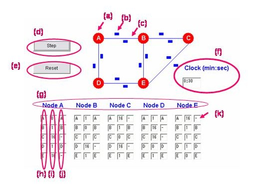

-------------------------------------------------------------
Virtual Network
- Nodes
- Floating Packets
- Links
Operation Commands
- Step Button : Run the applet step by step.
- Reset Button: Initialize the applet.
- Clock : Show each step by clock. (It changes every 30 seconds.)
Table
- Each Node's Table
- Destination : Destination from the source node.
- Cost : The total cost of each link. It is set to 1 initially.
- NextHop : Neighbor Hop directory connected.
- "-": "-" means that "Cost is infinity" or "NextHop is unknown".
|

|